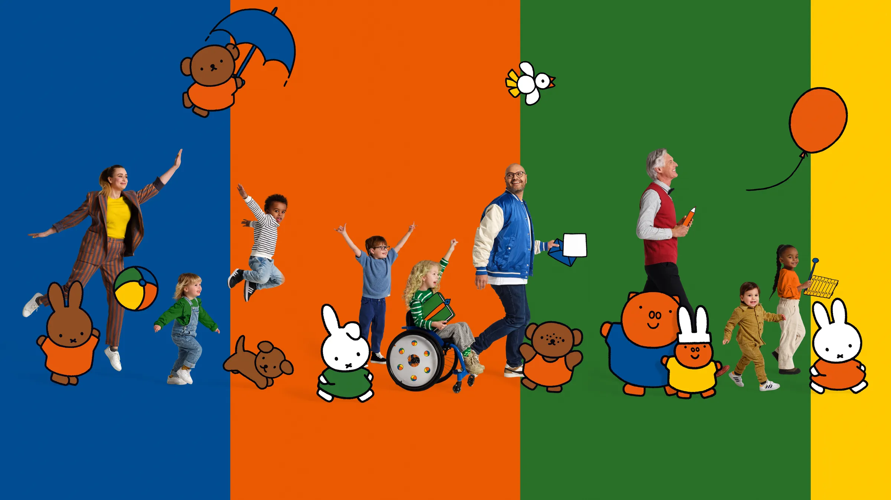

Over het museum
Een bezoek aan het nijntje museum is een actieve ontdekkingstocht. kijken, ruiken, onderzoeken, ontdekken, doen: spelenderwijs leer je zoveel meer!
Het nijntje museum is te vinden op de Agnietenstraat nummer 2, middenin het Utrechtse Museumkwartier. Een museum van ruim 1500m2 dat helemaal is afgestemd op bezoekers met jonge kinderen.
Organisatie
Het nijntje museum is onderdeel van de Stichting Centraal Museum.
Met dank aan
De realisatie van het nijntje museum was niet mogelijk geweest zonder de gulle bijdragen van Mercis BV en VriendenLoterij. Speciale dank gaat uit naar partners: Mr.Beam, KNGU, Leer in het verkeer, huisartsenpraktijk Gezond Wilnis.
Meer info
Meer over nijntje en Dick Bruna: nijntje.nl
Meer over het atelier van Dick Bruna en de Bruna-collectie: centraalmuseum.nl
Foto's Dick Bruna: Ferry André de la Porte
Overige fotografie: Emmely van Mierlo & Corné Clemens, en heel veel enthousiaste kinderen